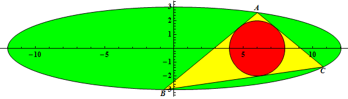

Triangle inscribed in ellipse
Problem 471
The triangle ΔABC is inscribed in an ellipse with equation
Let r(a,b) be the radius of the incircle of ΔABC when the incircle has center (2b, 0) and A has coordinates
For example, r(3,1) = ½, r(6,2) = 1, r(12,3) = 2.


Let
You are given G(10) = 20.59722222, G(100) = 19223.60980 (rounded to 10 significant digits).
Find G(1011).
Give your answer in scientific notation rounded to 10 significant digits. Use a lowercase e to separate mantissa and exponent.
For G(10) the answer would have been 2.059722222e1.